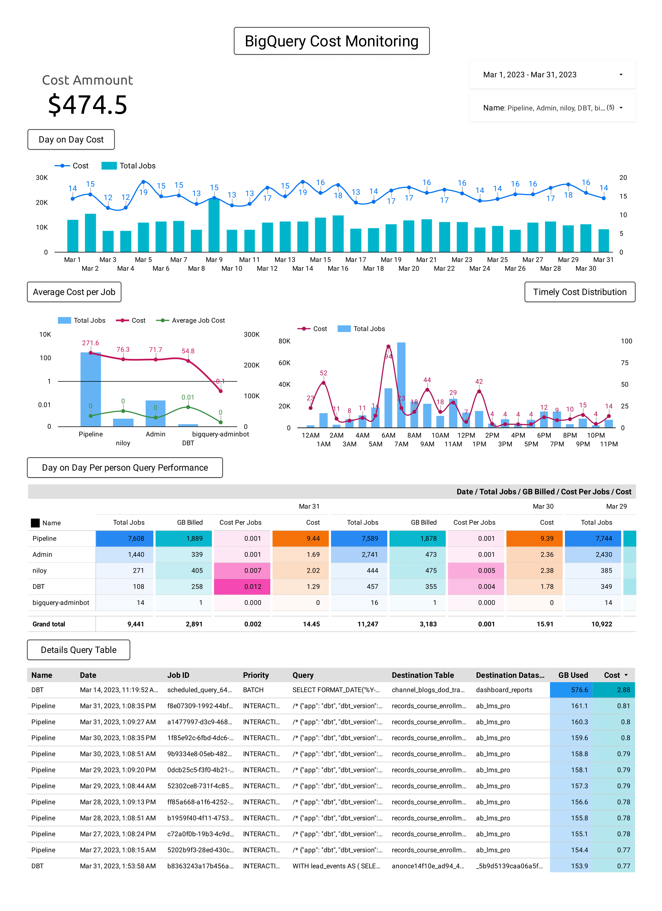

<div class="container">
                <div class="row mh-portfolio-modal-inner">
                    <div class="col-sm-5">
                        <h2>Monitor BigQuery Usage and Costs on GCP with Interactive Visualizations in Looker Studio
                        </h2>
                        <p>Monitoring BigQuery usage and costs is an essential aspect of managing data on Google Cloud
                            Platform (GCP). BigQuery is a fully-managed, serverless data warehouse that can scale to
                            petabyte-levels, making it easy to incur significant costs if you’re not careful.
                            Fortunately, GCP provides several tools and services to help you monitor and optimize your
                            BigQuery
                            usage and costs. In this post, we’ll explore how to monitor BigQuery usage and costs using
                            the Information Schema JOBS table and Visualize the information in Looker Studio for further
                            Monitoring. <br><br>

                        </p>
                        <div class="mh-about-tag">
                            <ul>
                                <li><span>Data Analytics</span></li>
                                <li><span>Google BigQuery</span></li>
                                <li><span>Looker Studio</span></li>
                                <li><span>SQL</span></li>
                                <li><span>GCP</span></li>
                            </ul>
                        </div>
                        <a href="https://medium.com/@niloy.swe/how-to-monitor-bigquery-usage-and-costs-on-gcp-with-interactive-visualizations-in-looker-studio-f2c1d44d99d2"
                            target="_blank" rel="noopener noreferrer" class="btn btn-fill">Source: Medium - Step by step procedure <span class="icon-external-link" aria-hidden="true"></span></a>
                    </div>
                    <div class="col-sm-7">
                        <div class="mh-portfolio-modal-img">
                            
                        </div>
                    </div>
                </div>
            </div>
